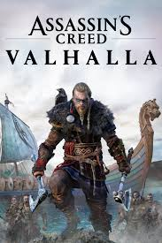

God of War: Ragnarok es un videojuego de acción y aventuras que continúa la historia de Kratos y su hijo Atreus mientras enfrentan a dioses nórdicos y se adentran en el conflicto apocalíptico del Ragnarok. El juego combina mitología nórdica, combates emocionantes y una narrativa impactante.
ASSASIN'S CREED VALHALLA-PS4
Assassin's Creed Valhalla" es un videojuego de acción y aventuras que te permite tomar el papel de Eivor, un vikingo, mientras exploras la Inglaterra medieval, participas en batallas y te involucras en la lucha entre los Asesinos y los Templarios en una trama épica de conspiración y poder.
GENSHIN IMPACT-PS4
Genshin Impact" es un juego de acción y rol de mundo abierto con un estilo artístico impresionante donde los jugadores exploran un vasto mundo, luchan contra enemigos y reúnen personajes con habilidades únicas mientras desentrañan una trama misteriosa.